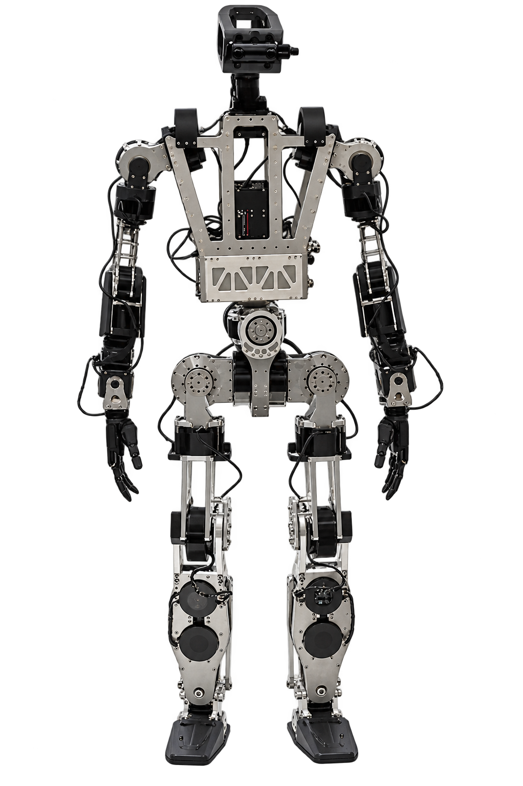
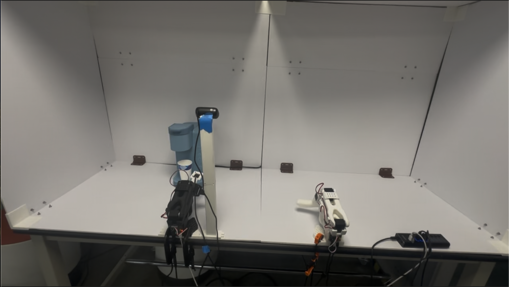
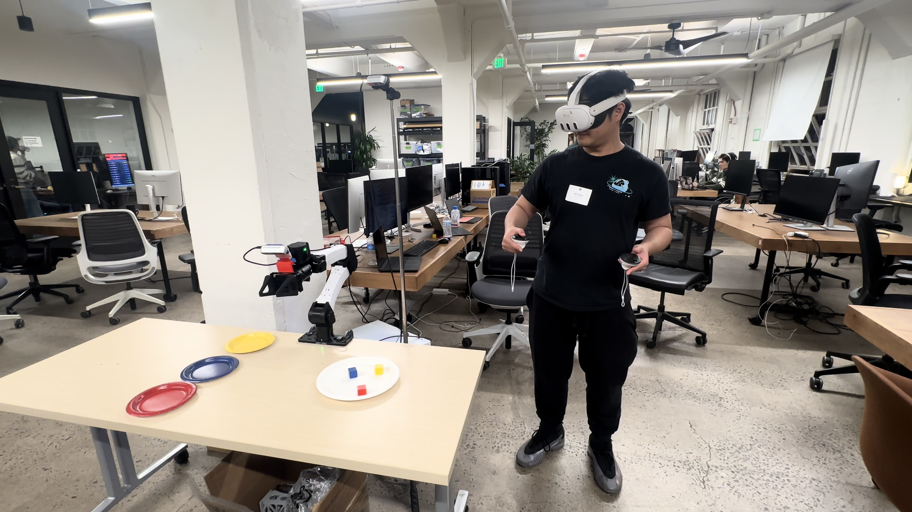
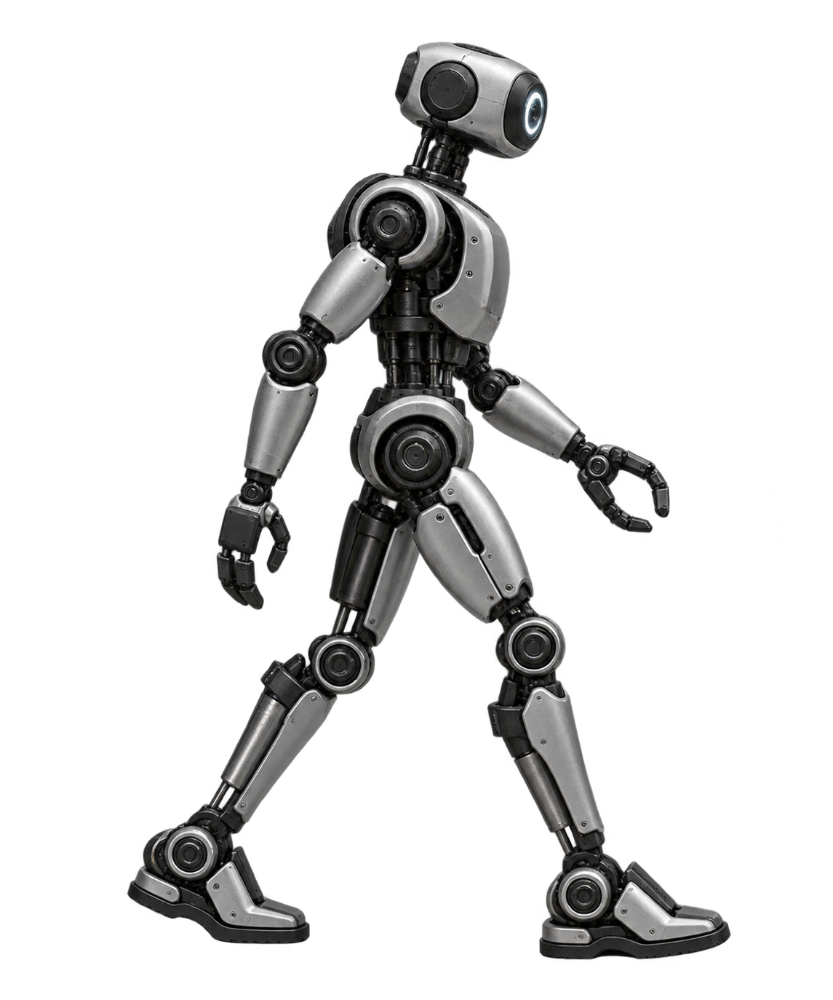
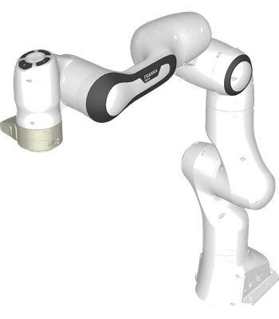
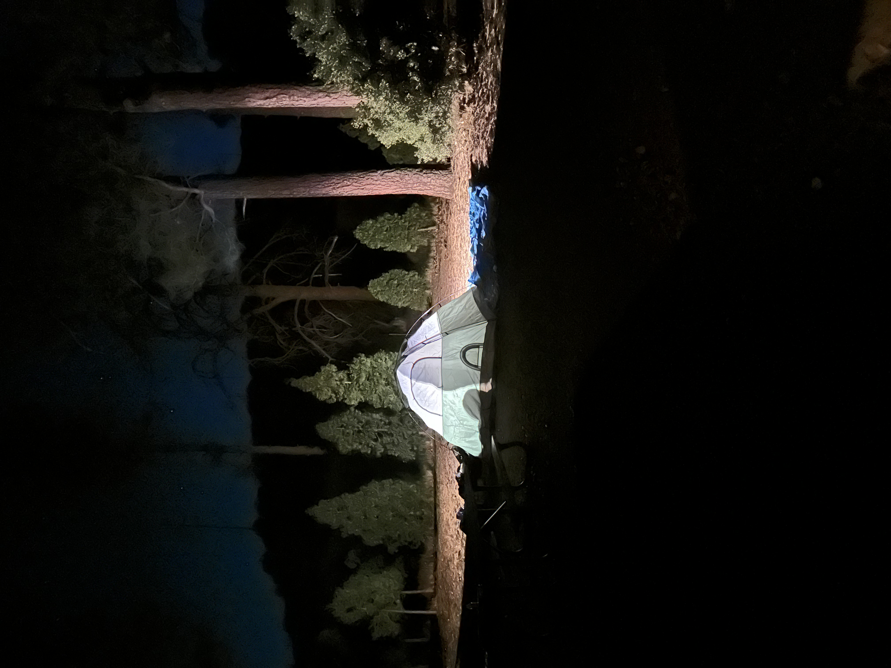
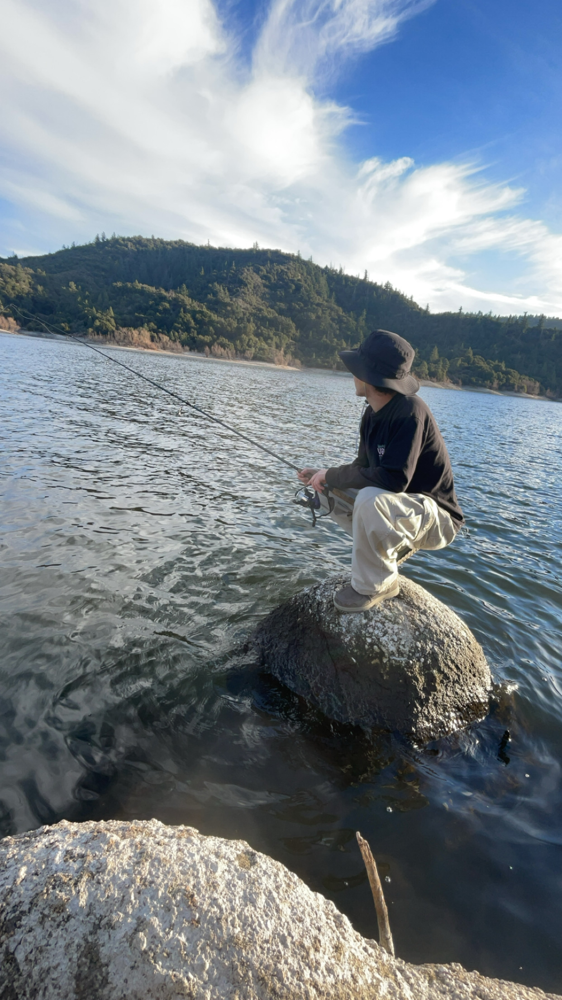
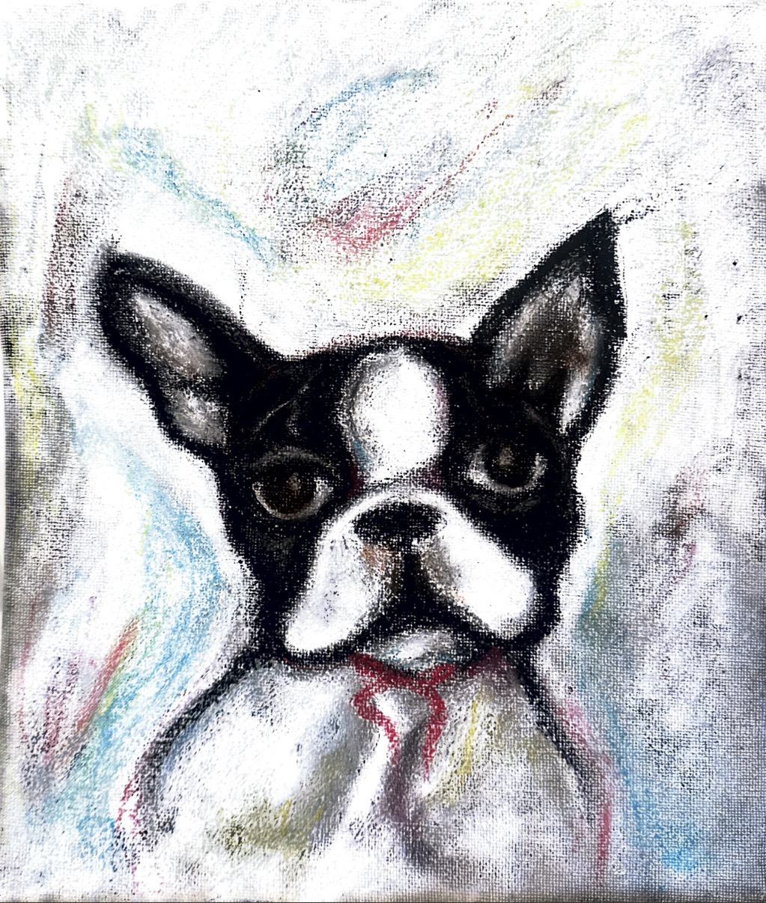

Selected works
GustavoGarcia
UC San Diego · Mathematics-Computer Science
Robotics · Machine Learning · Controls
Portfolio2026
Selected works
UC San Diego · Mathematics-Computer Science
Robotics · Machine Learning · Controls
Mathematics–Computer Science student at UC San Diego, building robots that learn and move.
At Triton Droids, I serve as Vice President of Engineering and lead software, electrical, and mechanical work across two generations of humanoid robots.
I’m especially interested in robot learning, locomotion, and the difficult gap between a promising simulation and a machine that works in the real world. Solving those problems is what keeps me building.
Gustavo Garcia · Robotics at UC San Diego
I’m looking for robotics research and internship opportunities where I can contribute to learning, controls, and real-world deployment. If that sounds like your team, I’d love to hear from you.
From humanoid hardware to robot learning.
Building the control stack for a 20-DOF humanoid’s lower body.

02A single-GPU, open-source approach to VLA policy improvement.

Training and deploying π0.5, ACT, and SmolVLA on SO-101 arms.

04Full-body motion tracking for the Engine AI T800.

05A complete task learned from teleoperation demonstrations.
2,048 parallel simulation rollouts with a Panda arm.




“Always work hard on something uncomfortably exciting.”— Larry Page
Let’s connect
gag009@ucsd.edu